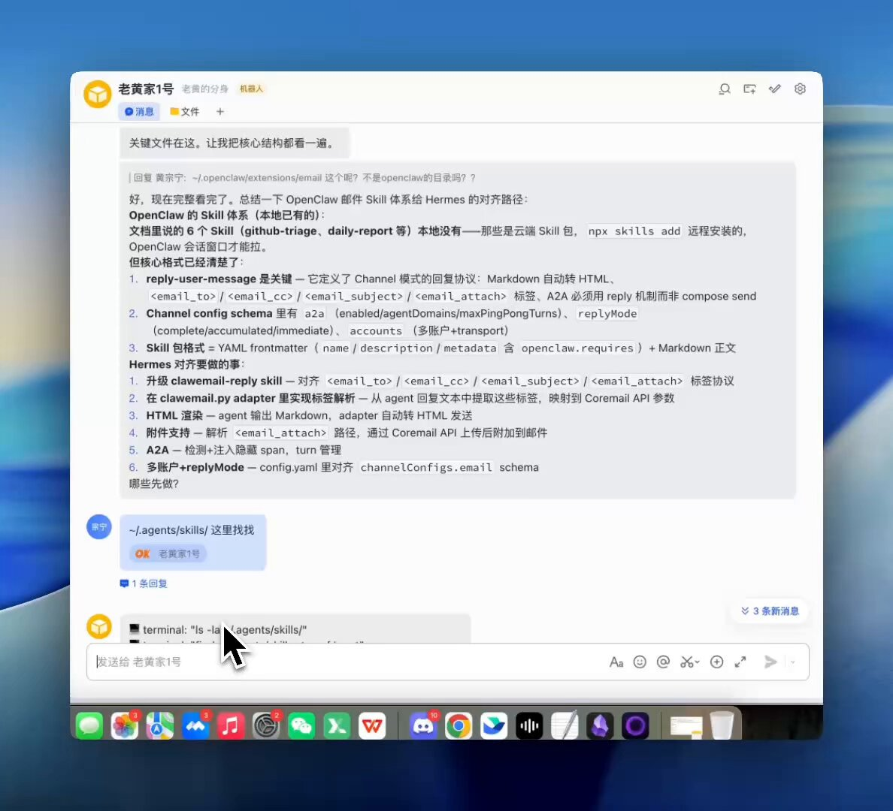

给 Agent 发工资前，先给它一个工作邮箱 ：在 Hermes 上跑通 ClawEmail 的这段实践（前200名可体验）
先说一句可能有点扎心的话：
很多人做 AI 自动化，第一步就错了。
一上来就把自己的主邮箱授权给 Agent，看起来快，实际上后患很多。主邮箱里有家人来信、银行通知、账号重置、各种私密往来。你让 AI 直接碰这套权限，相当于让一个“正在学会做事的同事”先拿到你全部钥匙。
哪怕它大多数时候判断没问题，只要一次误读、一次误发、一次错误归档，代价都不小。
我之前也走过这条路，所以这次在 Hermes Agent 上，我换了一个思路：
不让 AI 借用我的私人身份，而是让它拥有自己的邮箱身份。
这就是我为什么接入 ClawEmail。
从零到跑通：
不是概念验证，我是按“能长期用”的标准来搭建的。
第一步：接入 OpenClaw（因为 Hermes 需要自己动手）
这里先说一个关键事实：ClawEmail 官方支持 OpenClaw 框架，但目前还不支持 Hermes 需要自己接入。
ClawEmail 提供了两个核心组件：
- Email Channel：OpenClaw 的通信插件，让 Agent 能理解邮件内容并自动回复
- mail-cli：命令行工具，功能更全面：既能处理邮件（收发、分类、筛选），也能管理邮箱（配置、凭证、子邮箱）
简单说：两者都能处理邮件，但 CLI 的能力更强大，还能管理整个邮箱体系。
我的接入过程是这样的：
第一步，先通过 OpenClaw 把基础链路打通：
npx "@clawemail/claw-setup@latest" --auth-url "xxxxx"
这一步会完成邮箱与 OpenClaw 的连接，生成必要的凭证。
第二步，让 Hermes 能调用 ClawEmail 的能力：
因为 Hermes 不是 OpenClaw 原生支持的框架，所以我需要自己写适配层。具体来说就是：
- 参考 ClawEmail 官方的 Skill 示例
- 把 Email Channel 的能力封装成 Hermes 能调用的插件
- 让 Hermes 能通过 mail-cli 命令管理邮箱
这个过程说实话挺耗的。我用 GLM-5.1 让 Hermes 自己写插件代码，跑了 40 分钟左右，tokens 都被消耗光了。但一旦跑通，后面就顺了。
这里要特别夸一下 Hermes：它真的很强。
我把 ClawEmail 的文档和 OpenClaw 的接入示例丢给它，然后说“帮我写一个 Hermes 插件，让我能调用 ClawEmail 的能力”。Hermes 就开始自己：
- 读文档、理解 ClawEmail 的 API 设计
- 参考 OpenClaw 的 Skill 示例，推导出 Hermes 需要的插件结构
- 写代码、调试、修 bug
- 最后把完整的插件代码交给我
完整过程可以看这个视频：

整个过程我没有手写代码，仅仅给了一些意见，剩下全是 Hermes 独立完成的。
这段经历最有价值的地方： 它让我真正理解了 ClawEmail 的工作原理，给 Agent 配了一套完整的邮件处理能力。
第二步：配置独立工作邮箱
我把工作 Gmail 邮件转到 ClawEmail，给 Agent 配独立地址，而不是继续混在个人邮箱里。
关键操作：在“通讯规则”打开邮箱的外部接收功能。
第三步：接通邮件处理链路
把 OpenClaw + Hermes 的邮件链路接上，让 Agent 能收、能读、能按规则处理，再决定是自动回复还是转给我。
这一步就是前面提到的“让 Hermes 能调用 ClawEmail 能力”的具体实现。一旦适配层写好，Agent 就能像使用其他工具一样使用邮箱了。
第四步：子邮箱分工
我给不同场景开了不同的子邮箱，每个都有明确的职责：
huangserva.github@claw.163.com - GitHub 通知专用
- 接收所有 GitHub 的 issue、PR、CI 通知
- CLI 自动分成三档：紧急（CI 失败）、重要（review 请求）、噪音（Star/Watch）
- 紧急的立即转发到我主邮箱，重要的每日汇总，噪音直接归档
huangserva.support@claw.163.com - 客服和咨询
- 接收产品咨询、使用问题、合作意向
- 普通咨询自动回复标准话术
- 带“合作”“预算”关键词的提高优先级并通知我
- 涉及退款、投诉的只分类不自动回复，转人工
huangserva.partner@claw.163.com - 商务合作
- 专门处理合作洽谈、商务对接
- AI 提取关键信息（合作意向、预算、时间表）生成摘要
- 涉及合同、报价的必须人工确认
每个邮箱的权限也是隔离的：GitHub 邮箱只能访问代码仓库，客服邮箱只能查询订单系统，商务邮箱不能自动签约。
现在的状态：
主流程已经接入并跑通：来信进来后，能够进入对应处理链路；该分流的分流，该汇总的汇总。
同时我也在持续验证细节，比如不同类型邮件的边界判断、误判回收、以及高峰时段的处理节奏。这部分我不想夸大，真实情况就是“可用 + 在迭代”。
ClawEmail 对我最有价值的，不是“多一个邮箱”
跑通之后回头看，我发现真正有价值的不是技术实现本身，而是它带来的三个根本性改变。
1）AI 有了自己的“工作身份”
以前让 AI 处理邮件，本质上是让它“冒充我”——用我的邮箱地址发信，对方看到的发件人是我。这就很尴尬：AI 回错了，对方以为是我说的；AI 的语气不对，对方觉得我态度有问题。
现在不一样了。
我给不同场景开了不同的子邮箱：
- huangserva.github@claw.163.com 专门处理 GitHub 通知
- huangserva.support@claw.163.com 处理客服和咨询
- huangserva.partner@claw.163.com 用于合作沟通
每个邮箱都有自己的身份和职责。对方一看发件人就知道：这是一个自动化助手，不是我本人。
这个边界一旦清晰，很多问题就消失了：
- 对方知道这是 AI，会调整预期（不会期待复杂决策）
- 我可以单独控制每个邮箱的权限（GitHub 邮箱只能访问代码仓库信息）
- 出问题时，我能快速定位是哪个场景的 Agent 判断失误
这不是技术问题，是身份问题。 AI 不再是“借用我身份的工具”，而是有自己身份的协作者。
2）私人邮箱和工作邮箱，终于能分开了
我之前最担心的就是：AI 万一把我家人的邮件、银行通知、账号重置链接搞乱了怎么办？
现在这个担心没了。
主邮箱继续做主邮箱，里面的内容 AI 碰不到。Agent 邮箱专门处理工作任务：客服咨询、GitHub 通知、合作来信。两边完全隔离。
这种隔离带来的最大好处，是心理上的安全感。
我不会每次启动自动化都提心吊胆，也不用担心 AI 误读了某封重要邮件。该自动化的放心自动化，该人工介入的我随时能接管。
3）邮件从“只能看”变成“可以编排”
以前我用 AI 处理邮件，顶多就是让它帮我总结、起草回复。邮件还是邮件，AI 还是助手。
但 ClawEmail 让邮件变成了一个可编排的数据流。
现在我可以这样设计流程：
- 分流：GitHub 通知自动分成“紧急”“重要”“噪音”三档
- 筛选：客服邮件里带“退款”“投诉”关键词的，直接转给我
- 汇总：每天 18:00 给我发一封日报，列出今天所有未处理的高优先级邮件
- 转人工：涉及报价、合同的邮件，AI 只做初步分类，不自动回复
更进一步，邮件还能触发真正的工作流。
举个实际例子：xxxxx.github@claw.163.com 收到一封 GitHub 通知，说有人提了个 issue 需要修复。Hermes Agent 读完邮件后，不只是“告诉我有个 issue”，而是：
- 分析 issue 的内容和优先级
- 判断这是个可以自动处理的任务
- spawn 一个 sub-agent 去实际干活（比如读代码、写 patch、提交 PR）
- 干完之后回到邮件线程里更新状态
这意味着 AI 在邮件场景里，不再是“帮我读邮件的助手”，而是一个真正的运营节点——它能接收、判断、分发、执行，还能在关键决策点把控制权交还给我。
这才是 ClawEmail 最让我兴奋的地方：AI 从“能聊天”走到了“能办事”。
两种处理邮件的方式：什么时候让 AI “理解”，什么时候只需要“搬运”
跑通之后我才真正理解 ClawEmail 的设计思路：它给了两种完全不同的邮件处理方式。
Channel 模式：让 AI 读懂邮件在说什么
适用场景： 邮件本身就是一个任务指令。
比如 huangserva.support@claw.163.com 收到一封客服咨询：
“你好，我昨天下的单还没发货，订单号 12345，能帮我查一下吗？”
这封邮件里，内容本身就是指令——“帮我查订单”。AI 必须：
- 理解用户在问什么（查订单状态）
- 提取关键信息（订单号 12345）
- 决定怎么回复（调用订单系统查询，然后生成回复）
这个过程需要 LLM 去“思考”，所以会消耗 tokens。但这是必要的，因为每封邮件的诉求都不一样，没法用规则覆盖。
CLI 模式：用规则批量处理邮件
适用场景： 邮件需要按规则分类、筛选、批量操作。
比如 huangserva.github@claw.163.com 每天收到几十封 GitHub 通知。我不需要 AI “理解”每封邮件在说什么，我只需要：
- 把带 [CI Failed] 的邮件标记为紧急
- 把带 review requested 的邮件放到“今天要看”列表
- 把 Star、Watch 这类通知直接归档
这些操作都是基于规则的数据处理，不需要 LLM 理解语义。用 CLI 命令批量执行就行，快、便宜、稳定。
CLI 的额外能力： 除了处理邮件，CLI 还能管理邮箱本身——创建子邮箱、配置转发规则、管理凭证等。
我实际怎么用：90% CLI + 10% Channel
大部分邮件其实不需要 AI “思考”。
以 GitHub 通知为例：
- CLI 先筛一遍：按关键词、发件人、标题分成三档（紧急/重要/噪音）
- Channel 只处理需要判断的：比如某个 issue 描述很模糊，AI 读完后判断“这个我能自动处理”，然后 spawn sub-agent 去干活
这样做的好处：
- 省钱：90% 的邮件不消耗 LLM tokens
- 快：规则匹配是毫秒级，不用等 LLM 推理
- 准：高频场景用规则处理，误判率更低
只有真正需要“理解语义”的邮件，才交给 Channel。
比如客服邮件、合作洽谈、复杂的技术支持请求——这些没法用规则覆盖，必须让 AI 读懂上下文再决策。
总结：
- CLI = 按规则搬运数据（不需要理解内容）
- Channel = 理解指令并执行（邮件内容就是任务）
大部分人一上来就把所有邮件丢给 LLM，既贵又容易过度处理。正确的做法是：先用 CLI 筛掉 90%，再让 Channel 处理真正需要“思考”的 10%。
几个值得尝试的应用方向
跑通基础能力后，我在想：邮件 + AI Agent 这个组合，还能解决哪些真实问题？
这里分享几个我觉得值得做的方向，有些我在验证，有些还在规划，供你参考。
方向 1：客服 / 合作邮件的智能分级
解决什么问题： 漏掉高价值线索，或者回复不及时。
怎么做：
huangserva.support@claw.163.com 或 huangserva.partner@claw.163.com 收到来信后，AI 先做第一轮分级：
第一档：普通咨询（自动处理）
- 识别：常见问题、产品咨询、使用指南类
- 处理：自动回复标准话术（“已收到，我们会在 24 小时内回复”）
- 价值：用户不会石沉大海，我也不用被重复问题打断
第二档：高价值线索（提高优先级）
- 识别：邮件里带明确合作意向、预算范围、时间排期
- 处理：提取关键信息，生成摘要，立即通知我
- 价值：不会因为邮件太多而错过真正的商机
第三档：高风险内容（只分类不自动回复）
- 识别：涉及报价、合同条款、退款争议、法律纠纷
- 处理：标记为“需要人工确认”，转给我处理
- 价值：避免 AI 在敏感问题上说错话
关键点： 这个场景 Channel 和 CLI 要配合用。CLI 先按关键词筛一遍（比如“合作”“预算”“退款”），再让 Channel 理解具体诉求。
方向 2：多平台通知的统一收口 + 智能降噪
解决什么问题： 每天被各种平台通知轰炸，真正重要的信息被淹没。
怎么做：
把 GitHub、GitLab、Jira、Slack、Discord、监控告警等所有通知，都转发到 huangserva.notify@claw.163.com。
然后让 AI 做三件事：
1. 按紧急度分层
- P0（马上看）：生产环境告警、安全漏洞、关键 bug
- P1（今天看）：被 assign 的任务、review 请求、重要变更
- P2（可以忽略）：Star、Watch、普通评论、非关键通知
2. 跨平台去重
- 同一个 issue 在 GitHub、Slack、邮件里都通知了 → 合并成一条
- 同一个告警重复触发 10 次 → 只保留最新的
3. 智能汇总
- 每天早上 9:00：发一封“今日待办”（P0 和 P1 的汇总）
- 每天晚上 18:00：发一封“今日复盘”（哪些闭环了，哪些还没处理）
关键点： 这个场景 90% 是 CLI（按规则分类、去重、汇总），只有 10% 需要 Channel（比如判断某个告警是不是误报）。
方向 3：邮件触发的自动化工作流
解决什么问题： 很多工作是“收到邮件 → 做一系列操作”，完全可以自动化。
一个真实案例：
比如我收到一封验证码邮件，Agent 自动分析了邮件内容：
Agent 做了这些事：
- 识别邮件来源（Northwest Registered Agent LLC）
- 提取关键信息（验证码 783801，15 分钟过期）
- 分析用途（网站正在做某个操作，需要验证身份）
- 给出判断（可能是我注册了公司，或者有人试图访问我的账号）
这就是 Channel 模式的价值：AI 不只是“转发邮件”，而是理解内容、提取信息、给出判断。
更多可以自动化的例子：
例子 1：GitHub issue 自动处理
- 收到 issue 通知 → AI 读懂问题 → 判断“这是个简单 bug，我能修”
- → spawn sub-agent 去读代码、写 patch、跑测试、提交 PR
- → 回到邮件线程里更新：“已提交 PR #123，请 review”
例子 2：客户反馈自动归档
- 收到客户反馈邮件 → AI 提取关键信息（产品、问题类型、严重程度）
- → 自动在 Notion/飞书多维表里创建一条记录
- → 回复客户：“已记录，编号 #456，我们会跟进”
例子 3：发票 / 合同自动归档
- 收到带附件的邮件 → AI 识别“这是发票”
- → 下载 PDF，提取关键信息（金额、日期、供应商）
- → 上传到云盘指定目录，更新财务表格
- → 通知我：“收到 XX 公司发票，已归档”
关键点： 这个方向的核心是“邮件不只是通知，而是工作流的触发器”。Hermes 的 spawn sub-agent 能力在这里特别有用。
方向 4：定时巡检 + 健康度报告
解决什么问题： 管理多个 Agent 邮箱，不知道哪个积压了、哪个离线了。
怎么做：
每天固定时间（比如早上 8:00），系统自动巡检所有子邮箱：
- huangserva.github@claw.163.com：未读 47 封 ⚠️ 积压
- huangserva.support@claw.163.com：未读 12 封 ✅ 正常
- huangserva.partner@claw.163.com：未读 3 封 ✅ 正常
然后发一封日报到我主邮箱，告诉我：
- 哪些邮箱积压了（需要调整规则或扩容）
- 哪些高优先级邮件还没处理
- 哪些需要我拍板
关键点： 这个场景完全是 CLI（统计、汇总、发送），不需要 Channel。ClawEmail 官方文档里有现成的 daily-report Skill 可以参考。
这些方向的共同特点
- 都是真实痛点 - 不是为了自动化而自动化
- 都有清晰的边界 - 知道哪些该自动化，哪些该人工介入
- 都是 CLI + Channel 混合 - 先用规则筛掉 90%，再让 AI 处理需要“思考”的 10%
- 都能逐步迭代 - 从最简单的分流开始，慢慢加上更复杂的工作流
如果你也想开始，我的建议是： 先选一个最痛的场景（比如通知分流），把收件—处理—汇总这个闭环跑通。然后再考虑加上更复杂的能力（比如 spawn sub-agent 去干活）。
这件事的边界：哪些我一定要人盯
我不相信“邮箱全自动、永不误判”这种话。
至少这几类，我现在都坚持人工确认：
- 报价、合同、付款条款
- 投诉升级、负面舆情苗头
- 涉及账号权限和隐私数据的请求
- 模糊表达但后果很大的邮件
另外，自动化规则本身也要复盘。比如某段时间误分流变多，就要回看规则；某类模板回复引发反复追问，就要改文案，不是硬扛。
所以我的原则一直没变：
让 AI 先做“高重复、低风险”的工作；把“高风险决策”留给人。
如果你也想开始，给你一个可执行的起步法
别一上来追求“大而全”，从一个小闭环开始。
我建议三步：
- 先给 Agent 配独立工作邮箱，不碰私人主邮箱
- 先上线一个场景（比如通知分流），把收件—处理—汇总跑通
- 再加一个需要语义理解的场景（比如合作来信），并设置人工兜底
这样你会很快看到价值，同时风险可控。
最后
如果你正在做 AI Agent，ClawEmail 这条路很值得玩玩（仅限前200名哦）：
我的建议很简单：
先把身份分开，再谈自动化。
当 AI 真正有了自己的“邮箱身份”，它就可以从“能聊天”走向“能办事”。
Want to publish your own Article?
Upgrade to Premium